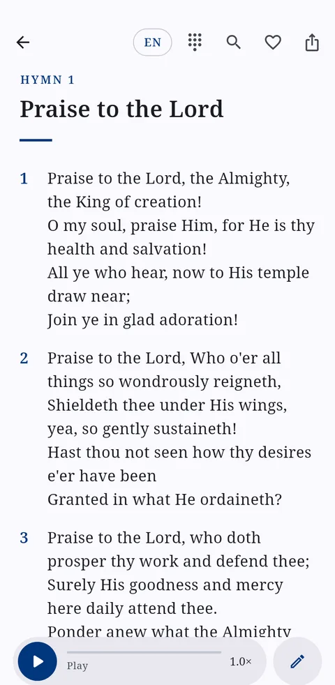

Adventist Hymnal
Android · coming to Google PlayThe difficulty: church members keep a separate hymn app for each language they sing in.
The solution: the Seventh-day Adventist hymnals of many languages in one app. The English and Yorùbá hymnals sit side by side, so any hymn switches language with one tap while the piano keeps playing.
695 English hymns · 621 Yorùbá hymns · 225 responsive readings
- Piano accompaniment for every English hymn
- Find a hymn by number, title or a line of its words
- Works offline, with no account, adverts or tracking
- Readers suggest corrections; reviewed changes reach every phone as signed updates
Flutter · Dart · Supabase · Ed25519-signed updates
